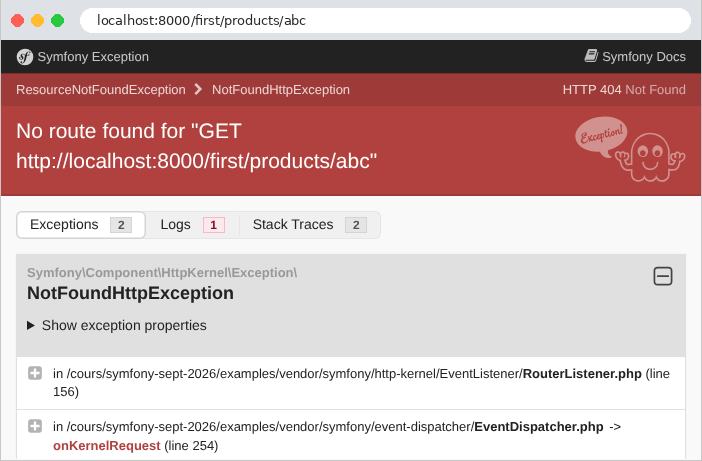
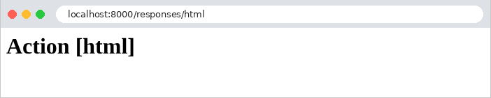

2. Actions, roteamento, respostas
Este capítulo examina o caminho percorrido por uma requisição, do navegador até a action que a processa, e a resposta que essa action devolve. As views só serão abordadas no Capítulo 4: aqui, as actions devolvem texto ou JSON diretamente.
2.1. Exemplo 01: a estrutura de uma aplicação Symfony
O primeiro exemplo é a menor aplicação [Symfony] possível. Um projeto criado por [composer create-project symfony/skeleton] contém cerca de vinte arquivos e pastas, e um projeto criado por [symfony new --webapp] contém muito mais (veja a introdução); aqui, manteremos apenas aquilo de que a aplicação não pode prescindir:
- [public/index.php]: o ponto de entrada da aplicação. Todas as requisições HTTP, qualquer que seja a URL, são tratadas por esse arquivo. A pasta [public] é a única que o servidor web serve: ela contém também os arquivos estáticos (folhas de estilo, imagens, scripts), e somente eles;
- [src/Kernel.php]: o núcleo da aplicação, que a monta e processa as requisições. A pasta [src] contém todas as classes da aplicação;
- [config]: a configuração da aplicação: a lista de seus bundles ([bundles.php]) e a configuração de cada um (pasta [packages]);
- [var]: os arquivos que a aplicação grava durante o funcionamento: o cache (pasta [var/cache]), em que o [Symfony] armazena a configuração compilada, e, mais adiante, as sessões. Essa pasta é criada pelo [Symfony] na primeira requisição;
- [.env]: as configurações da aplicação, na forma de pares [NAME=value];
- [bin/console]: a ferramenta de linha de comando do [Symfony];
- [composer.json]: a descrição do projeto para o [Composer].
2.1.1. Ponto de entrada: public/index.php
- Linha 1: um arquivo [PHP] começa com a tag [<?php]. Tudo o que vem depois é código [PHP]; um arquivo que contém apenas código não fecha essa tag;
- linha 2: um comentário, de [//] até o fim da linha ([/* ... */] delimita um comentário de várias linhas);
- linhas 4–7: a instrução [use] importa o nome de uma classe. O nome completo de uma classe [PHP] inclui seu namespace (namespace), equivalente aos pacotes do [Java]: [Symfony\Component\HttpFoundation\Request] é a classe [Request] no namespace [Symfony\Component\HttpFoundation]. Depois de [use], o arquivo pode escrever simplesmente [Request]. Os nomes das classes do [Symfony] indicam de onde vêm: [Component\HttpFoundation], o componente que representa as requisições e as respostas HTTP; [Component\Dotenv], o que lê o arquivo [.env]; [Component\ErrorHandler], o que trata os erros. [App\Kernel] é uma classe da própria aplicação;
- linha 11: [require] executa outro arquivo [PHP]. [__DIR__] é o diretório do arquivo atual (aqui, [public]); [dirname(__DIR__, 2)] sobe dois níveis até a pasta [examples]; o operador [.] concatena duas strings. O arquivo [vendor/autoload.php], escrito pelo [Composer], instala o carregador de classes: na primeira vez que uma classe é usada, ele localiza e carrega o arquivo que a define. Graças a isso, nunca é preciso escrever [require] para classes. A pasta [vendor] faz parte da pasta [examples], que é compartilhada por todos os exemplos (veja a introdução). Um [require] devolve o valor do arquivo executado: [vendor/autoload.php] devolve o carregador, armazenado na variável [$loader]. No [PHP], o nome de uma variável sempre começa com [$];
- Linha 12: o carregador de classes do [Composer] conhece as classes das bibliotecas localizadas na pasta [vendor]. Ele também precisa conhecer as classes da aplicação, que por convenção ficam em sua pasta [src], sob o namespace [App]. Em um projeto padrão, o [Composer] obtém essa informação do arquivo [composer.json] do projeto. Nossos exemplos compartilham uma única pasta chamada [vendor], mas cada um tem sua própria pasta [src]: cada exemplo, portanto, a declara ao carregador por conta própria, por meio de seu método [addPsr4] (o padrão [PSR-4] associa namespaces a pastas: a classe [App\Controller\FirstController] está no arquivo [src/Controller/FirstController.php]). O operador [->] designa um membro de um objeto. Em uma string entre aspas simples, [\\] designa um único caractere [\];
- linha 15: [new Dotenv()] cria um objeto da classe [Dotenv], cujo método [bootEnv] lê o arquivo [.env] (apresentado adiante) e armazena suas variáveis nos arrays [$_SERVER] e [$_ENV] do [PHP], onde a aplicação as encontrará;
- linhas 18–20: o modo de depuração (o arquivo [.env] o deduz do ambiente; veja adiante). [Debug::enable()] converte qualquer erro do [PHP] — mesmo um simples aviso — em uma exceção, que é exibida em uma página de erro detalhada (exemplo 03). [::] designa um membro de uma classe: [enable] é um método estático, que é chamado na classe, sem um objeto;
- linha 23: criação do núcleo da aplicação, um objeto da classe [App\Kernel], com dois parâmetros: o ambiente ([dev]) e o modo de depuração ([true]). [(bool)] converte o valor em booleano;
- linha 24: [Request::createFromGlobals()] cria um objeto [Request] a partir da requisição HTTP recebida pelo [PHP] (o [PHP] a armazena em seus arrays “superglobais” [$_GET], [$_POST], [$_COOKIE], [$_SERVER]...);
- linha 25: o núcleo processa a requisição ([handle]) e devolve um objeto [Response]. É aqui que tudo acontece: o núcleo inicia (monta seus bundles e constrói seus serviços), encontra a action responsável pela requisição, executa-a e recupera a resposta que ela produz;
- linha 26: a resposta é enviada ao navegador: o código de status, os cabeçalhos e, por fim, o corpo;
- linha 27: o núcleo conclui a requisição: executa as tarefas de processamento que podem esperar até que a resposta tenha sido enviada (veja o capítulo sobre o ciclo de vida).
Essas quatro linhas resumem o [Symfony]: entra uma requisição, sai uma resposta. A aplicação inteira é uma função que transforma um objeto [Request] em um objeto [Response]. Esse arquivo é o mesmo em todos os exemplos. Ele também evidencia uma particularidade do [PHP]: a aplicação é reconstruída a cada requisição. O servidor web executa [public/index.php] do início ao fim para cada requisição que recebe: carrega as classes, constrói o núcleo, processa a requisição, envia a resposta e depois esquece tudo. Nenhum objeto sobrevive de uma requisição para a outra. No capítulo sobre escopos de dados, veremos as consequências desse comportamento, que é o oposto do [Java], do [C#] ou do [Python], cujas aplicações permanecem na memória entre as requisições.
Construir o núcleo a cada requisição seria custoso se toda a configuração tivesse de ser relida e interpretada a cada vez. O [Symfony] faz isso uma única vez: ele compila sua configuração em código [PHP], armazenado na pasta [var/cache/dev] (para o ambiente [dev]), que ele passa então a reutilizar. No modo de depuração, a cada requisição ele verifica se algum arquivo de configuração mudou e, se necessário, recompila.
Um projeto [Symfony] típico tem um arquivo [public/index.php] mais curto, que delega essa tarefa ao componente [Runtime] do [Symfony] (o estudo de caso o utiliza): optamos por escrevê-lo por extenso para ver o que acontece.
2.1.2. O núcleo: src/Kernel.php
- linha 4: o namespace da classe. Seu nome completo é, portanto, [App\Kernel];
- linha 11: a classe [Kernel] da aplicação herda ([extends]) da classe [Kernel] do [Symfony], que é importada com o nome [BaseKernel] (a palavra-chave [as] na linha 8 renomeia a importação, já que as duas classes têm o mesmo nome). Essa classe é responsável por processar uma requisição ([handle]);
- linha 15: a instrução [use], dentro de uma classe, não importa um nome; em vez disso, ela incorpora um trait, um fragmento de classe reutilizável. [MicroKernelTrait] dá ao núcleo seu comportamento padrão: lê a lista de bundles em [config/bundles.php], a configuração deles na pasta [config/packages], os serviços em [config/services.yaml] (Exemplo 06) e as rotas em [config/routes.yaml] (Exemplo 02). Ele também procura rotas na própria classe [Kernel]: é isso que permite reduzir este primeiro exemplo a apenas ela;
- linhas 19–24: uma action, um método public que processa uma requisição. O atributo [#[Route('/')]] a associa ao caminho [/]: é o roteamento. Um atributo [PHP], escrito como [#[...]], é uma informação associada ao código (uma classe, um método, um parâmetro) que o [PHP] ignora, mas que as bibliotecas leem: o equivalente das annotations do [Java] ou dos decorators do [Python]. O [Symfony] faz uso extensivo deles;
- linha 20: [: Response] declara o tipo do valor devolvido. Os tipos são opcionais no [PHP], mas, quando são especificados, o [PHP] os verifica em tempo de execução;
- Linha 23: a action devolve um objeto [Response], cujo primeiro parâmetro é o corpo da resposta. Isso segue a regra do [Symfony]: uma action sempre devolve um objeto [Response] (Exemplo 03).
2.1.3. Configuração: config/bundles.php, config/packages/framework.yaml e .env
O [Symfony] é composto de bundles: pacotes que integram funcionalidades à aplicação (views [Twig], segurança, acesso ao banco de dados etc.). A lista de bundles da aplicação está no arquivo [config/bundles.php]:
O arquivo devolve um array associativo: para cada bundle, identificado pelo nome de sua classe ([FrameworkBundle::class] é o nome completo da classe, como string), ele lista os ambientes em que o bundle está ativo (neste caso, todos). Nossa aplicação tem apenas um bundle, FrameworkBundle, que é o núcleo do framework e reúne os componentes básicos: requisições e respostas, kernel, roteamento, contêiner de serviços, console e assim por diante. Os exemplos seguintes acrescentarão outros. Cada bundle tem sua própria configuração, localizada na pasta [config/packages], com um arquivo por bundle, escrito em [YAML]:
[YAML] é um formato de texto que descreve dados por meio de indentação: [framework] (a chave do FrameworkBundle) contém a chave [secret]. As linhas iniciadas por [#] são comentários. O valor [%env(APP_SECRET)%] é uma referência à variável [APP_SECRET], lida do ambiente do processo ou, na falta dele, do arquivo [.env]:
- Linha 3: o ambiente da aplicação: [dev] para desenvolvimento, [prod] para produção (e [test] para testes automatizados). O ambiente determina a configuração: um arquivo [config/packages/prod/xxx.yaml] só seria lido em produção. Ele também define o modo de depuração, que é habilitado por padrão, exceto em produção (a variável [APP_DEBUG] permitiria definir isso de outra forma): uma exceção não tratada exibe então uma página detalhada (exemplo 03), e o [Symfony] recompila sua configuração assim que ela muda. Esse modo é destinado ao desenvolvimento, e somente a ele: a página de erro revela o código-fonte e a configuração da aplicação;
- linha 5: a chave secreta da aplicação: uma string aleatória que o [Symfony] usa para assinar certos dados (links de conexão, tokens anti-CSRF etc.). Cada exemplo tem a sua.
Ao contrário do que ocorre em outros frameworks, o arquivo [.env] de um projeto [Symfony] costuma ser publicado junto com o código-fonte: ele contém os valores padrão das variáveis, adequados ao desenvolvimento. Os valores específicos de cada instalação (como uma senha ou a chave secreta de produção) ficam em um arquivo [.env.local] , que é lido depois do arquivo principal, mas nunca é publicado; em produção, esses valores são fornecidos, em vez disso, por variáveis de ambiente reais, que têm precedência sobre os dois arquivos. Tudo o que não for especificado na configuração mantém seu valor padrão, definido por cada bundle. O comando [php bin/console config:dump-reference framework] exibe todas as chaves possíveis do FrameworkBundle, com seus valores padrão (várias centenas de linhas).
2.1.4. A ferramenta bin/console e o arquivo composer.json
O arquivo [bin/console] é um script [PHP] que constrói o núcleo, como o [public/index.php], mas para executar um comando em vez de processar uma requisição:
- Linha 1: no [Linux] e no [macOS], essa linha permite executar o arquivo diretamente ([./bin/console]); no [Windows], digita-se sempre [php bin/console];
- Linha 17: a classe [Application] do FrameworkBundle é uma aplicação de linha de comando construída sobre o núcleo; ela conhece os serviços e a configuração do núcleo. [ArgvInput] representa os parâmetros da linha de comando; [run] executa o comando solicitado.
[php bin/console list] exibe a lista de comandos disponíveis: cerca de quarenta neste exemplo, e mais são acrescentados à medida que bundles são incluídos. Usaremos vários deles, entre os quais [debug:router], [debug:container] e [cache:clear]. Por fim, o arquivo [composer.json] descreve o exemplo:
Este é um documento JSON. Ele não está presente por causa do [Composer] (as bibliotecas dos exemplos são descritas pelo arquivo [examples/composer.json], veja a introdução), mas por causa do núcleo: o [Symfony] procura a pasta do projeto subindo a partir do arquivo [src/Kernel.php] até a primeira pasta que contenha um arquivo chamado [composer.json]. É a partir dele que o núcleo encontra todos os outros ([config], [var], [templates]...). O arquivo [composer.json] de um projeto padrão também contém a lista de suas bibliotecas e a regra PSR-4 de suas classes (linhas 5–9), que nossos exemplos declaram eles mesmos ao carregador (linha 12 do [public/index.php]).
2.1.5. Execução
Em uma janela de terminal aberta na pasta [01-structure], digite [php -S localhost:8000 -t public]. O [PHP] exibe:
A opção [-S] inicia o servidor de desenvolvimento integrado ao [PHP]. Ele escuta na porta 8000 da própria máquina ([localhost]): aceita apenas requisições dessa máquina, o que é adequado ao desenvolvimento ([-S 0.0.0.0:8000] o abriria para as outras máquinas da rede). A opção [-t public] define o diretório [public] como a raiz do site: um arquivo que exista nesse diretório é servido como está; qualquer outra URL é tratada pelo [public/index.php]. Ele é interrompido com [Ctrl-C]. Esse servidor se destina ao desenvolvimento: em produção, será um servidor web como o [Apache] ou o [Nginx], associado ao [PHP-FPM] (veja o estudo de caso). Não é necessário reiniciá-lo após modificar o código ou a configuração: como o [PHP] relê os arquivos a cada requisição, a alteração passa a valer na requisição seguinte. (O [Symfony] também oferece sua própria ferramenta, o programa [symfony], cujo comando [symfony serve] inicia um servidor mais completo; ele é descrito no apêndice.)
Vamos solicitar a URL [http://localhost:8000/] com um navegador:

e depois com o [curl]. A opção [-i] também exibe os cabeçalhos HTTP da resposta:
A primeira linha da resposta contém a versão do protocolo, o código de status (200) e sua descrição ([OK]). Em seguida vêm os cabeçalhos: o host solicitado, [Connection: close] (o servidor de desenvolvimento fecha a conexão após cada resposta), a versão do [PHP], uma diretiva de cache (por padrão, o [Symfony] impede que intermediários coloquem a resposta em cache), a data, o tipo de conteúdo e [X-Robots-Tag: noindex], que instrui os mecanismos de busca a não indexar a página (o [Symfony] adiciona isso no modo de depuração: um site em desenvolvimento não precisa ser indexado). Uma linha vazia separa os cabeçalhos do corpo da resposta. No restante deste documento, não incluiremos mais os cabeçalhos [Host], [Connection], [X-Powered-By], [Cache-Control], [Date] e [X-Robots-Tag], pois eles não variam.
O cabeçalho [Content-Type: text/html; charset=UTF-8] indica que a resposta é HTML, com os caracteres codificados em UTF-8. Essa é a escolha do [Symfony] para uma resposta cuja action não especificou o tipo: o navegador interpreta, portanto, a string como HTML (aqui, sem nenhuma tag, ela é exibida como está). O Exemplo 03 mostrará como especificar outro tipo. A resposta não define nenhum cookie: o [Symfony] só cria uma sessão quando a aplicação a utiliza (veja o capítulo sobre escopos).
A cada requisição, o console do servidor exibe algumas linhas de log: a conexão sendo estabelecida, uma mensagem do [Symfony] indicando a rota escolhida, seguida do código da resposta, do método e do caminho.
A mensagem [[info] Matched route] vem do log (logger) do [Symfony]: sem uma biblioteca de log instalada, o [Symfony] grava suas mensagens na saída de erro do processo, que o servidor de desenvolvimento exibe. A rota recebeu um nome calculado pelo [Symfony] , [app_kernel_home] , com base no nome da classe e no nome do método: o exemplo seguinte nomeará suas rotas automaticamente. Depois dessa primeira requisição, a pasta [var/cache/dev] contém a configuração compilada: o contêiner da aplicação ([App_KernelDevDebugContainer.php], Exemplo 06) e a tabela de rotas ([url_matching_routes.php]).
2.2. Exemplo 02: o roteamento
O roteamento associa uma URL e um método HTTP (GET, POST...) a uma action. Escrever todas as actions diretamente no núcleo logo se tornaria ilegível; em vez disso, elas são organizadas em classes — os controllers. O Exemplo 02 tem dois:
Os arquivos [public/index.php], [bin/console], [composer.json], [.env], [config/bundles.php] e [config/packages/framework.yaml] são os do Exemplo 01: não voltaremos a listá-los (só mudam o nome do exemplo e a chave secreta). O núcleo [src/Kernel.php] já não tem nenhuma funcionalidade: ele se reduz à sua classe e ao seu trait. Cada controller é uma classe do namespace [App\Controller], localizada na pasta [src/Controller]: essa é a convenção do [Symfony], e o padrão [PSR-4] associa os dois (exemplo 01).
2.2.1. O controller HomeController
- linha 4: o namespace da classe. Seu nome completo é, portanto, [App\Controller\HomeController];
- linha 9: a classe. Por convenção, o nome de uma classe é escrito com inicial maiúscula em cada palavra ([HomeController]), enquanto o nome de um método ou de uma variável começa com letra minúscula ([action01Post]). Um controller [Symfony] não precisa herdar de nenhuma classe (o exemplo seguinte apresentará a classe-mãe normalmente usada);
- Linha 12: o atributo [#[Route]] da action, com três parâmetros, dois dos quais são nomeados: o valor é associado ao parâmetro pelo nome ([name: 'home']), e não pela posição. O caminho [/], o nome da rota ([home]), que servirá para gerar sua URL (exemplo 04), e os métodos HTTP aceitos: [methods: ['GET']]. No [PHP], [[a, b]] é um array (array). Sem o parâmetro [methods], a rota aceitaria todos os métodos;
- linha 13: a action [index], um método public da classe;
- linhas 15–26: uma string de várias linhas. A sintaxe [<<<'HTML'] ... [HTML] (nowdoc) delimita um texto escrito como está, entre duas linhas que contêm a mesma palavra, neste caso [HTML]; a indentação da linha final é removida de todas as linhas. A action devolve HTML, que é enviado com o tipo [text/html] (veja o Exemplo 01).
A action [index] devolve, assim, uma página HTML que contém links para as actions do outro controller:

2.2.2. O controller FirstController
- linhas 10–13: um atributo [#[Route]] aplicado à classe fornece um prefixo para as rotas de todas as suas actions: [/first] para os caminhos e [first_] para os nomes. A URL de uma action é a concatenação do prefixo com o caminho de sua rota;
- linhas 16–20: o caminho [''] refere-se ao próprio prefixo: [GET /first];
- linhas 23–34: o mesmo caminho, para dois métodos HTTP — [GET] e [POST] — tratados por duas actions diferentes. O nome de uma action pode ser escolhido livremente: é o atributo [#[Route]] que a associa a uma URL e a um método HTTP. [methods: ['GET', 'POST']] associaria os dois métodos à mesma action;
- Linhas 39–43: [{id}] é um parâmetro de rota: esse segmento da URL pode assumir vários valores. O parâmetro [$id] da action recebe seu valor: para a URL [/first/products/17], é 17. Por padrão, um parâmetro de rota aceita qualquer texto sem barra; o parâmetro [requirements] restringe esse comportamento: a expressão regular [\d+] (um ou mais dígitos, em que [\d] indica um dígito e [+] indica repetição) aceita apenas dígitos. Caso contrário, a rota não corresponde. O tipo [int] do parâmetro da action instrui o [Symfony] a converter o valor (uma string, extraída da URL) em inteiro. Isso é o binding de dados, que o próximo capítulo examinará em detalhe. Na string entre aspas duplas ["Product no. $id"], a variável [$id] é substituída por seu valor: é a interpolação (uma string entre aspas simples, por outro lado, é escrita como está);
- Linhas 47–51: dois parâmetros de rota são passados a dois parâmetros de action. O [Symfony] os associa pelo nome; a ordem dos parâmetros da action não importa. Desta vez, as restrições são escritas no próprio caminho, entre [<] e [>]: é mais curto;
- linhas 55–60: um parâmetro de rota que contém [/]. A classe [Requirement] do [Symfony] reúne, na forma de constantes, as expressões regulares mais comuns: [Requirement::CATCH_ALL] ([.+]: quaisquer caracteres, inclusive barras), [Requirement::DIGITS] ([[0-9]+]), [Requirement::UUID], [Requirement::DATE_YMD]...
2.2.3. A configuração: config/routes.yaml e config/services.yaml
Resta apenas dizer ao [Symfony] onde estão as rotas:
O arquivo [config/routes.yaml] descreve as rotas da aplicação ou, como neste caso, indica onde encontrá-las. A chave [controllers] é um nome arbitrário. O recurso [routing.controllers] refere-se às rotas declaradas pelos atributos [#[Route]] dos controllers reconhecidos pela aplicação. E é o arquivo [config/services.yaml] que os torna conhecidos da aplicação:
Este arquivo declara os serviços da aplicação: os objetos que o [Symfony] sabe criar sozinho (exemplo 06). As linhas 10–11 transformam cada classe da pasta [src] em um serviço. Graças à linha 8 ([autoconfigure]), o [Symfony] examina cada uma: uma classe com um método que tenha um atributo [#[Route]] torna-se um controller, e suas rotas são adicionadas à tabela de roteamento. Quase nunca voltaremos a escrever esses dois arquivos: eles são iguais em todos os exemplos.
2.2.4. Execução
Eis as respostas a algumas requisições:
Para enviar uma requisição POST, use a opção [-X POST] do [curl]:
A requisição POST é aceita como está: o [Symfony] não tem uma proteção CSRF que se aplique a todas as requisições. Ele protege os formulários um a um, por meio de seu componente Form (Exemplo 18). Um método HTTP que nenhuma action trata para esse caminho resulta em um erro 405 ([Method Not Allowed]). O cabeçalho [Allow] lista os métodos aceitos:
No modo de depuração, o corpo da resposta é a página de erro detalhada do [Symfony] — que veremos no Exemplo 03 — precedida de um comentário HTML que resume o erro. Os dois cabeçalhos [X-Debug-Exception] também fornecem a mensagem e o local do erro, codificados como em uma URL ([%20] para um espaço...): eles se destinam a ferramentas de desenvolvimento. Uma rota [GET] também aceita o método [HEAD] (a mesma requisição que GET, sem o corpo da resposta), que o [Symfony] trata por conta própria.
Uma URL que nenhuma rota trata resulta em um erro 404. Isso vale também para um identificador que não é um número: a restrição [\d+] impede que a rota corresponda a [/first/products/abc].
Em um navegador, no modo de depuração:

A página de erro do [Symfony] explica que nenhuma rota foi encontrada (“No route found”) e exibe a exceção lançada pelo roteador, [NotFoundHttpException]. O Capítulo 7 mostrará como substituí-la por uma página personalizada da aplicação. Observe também que o [Symfony] distingue [/first] de [/first/]: a segunda URL não tem rota, mas, em vez de devolver um erro 404, o [Symfony] redireciona o navegador (exemplo 04) para a primeira:
O comando [php bin/console debug:router], executado na pasta do exemplo, lista todas as rotas da aplicação:
Cada linha lista o nome da rota, o método HTTP e o caminho. Os nomes das rotas do [FirstController] realmente receberam o prefixo [first_]. [php bin/console debug:router first_product] detalharia uma rota (sua restrição, seu controller); [php bin/console router:match /first/products/17] indica qual rota corresponde a um caminho.
2.3. Exemplo 03: as respostas de uma action
O que uma action devolve determina a resposta HTTP. O Exemplo 03 revê os principais casos:
O controller [ResponsesController] associa cada URL [/responses/xxx] a uma action:
1 2 3 4 5 6 7 8 9 10 11 12 13 14 15 16 17 18 19 20 21 22 23 24 25 26 27 28 29 30 31 32 33 34 35 36 37 38 39 40 41 42 43 44 45 46 47 48 49 50 51 52 53 54 55 56 57 58 59 60 61 62 63 64 65 66 67 68 69 70 71 72 73 74 75 76 77 78 79 80 81 82 83 84 85 86 87 88 89 90 91 92 93 94 95 96 97 98 99 100 101 102 103 104 105 | |
Vamos analisar este código:
- Linhas 13–16: o controller herda da classe [AbstractController] do FrameworkBundle. Essa é a classe-mãe normalmente atribuída aos controllers: ela lhes fornece atalhos — métodos que executam as tarefas mais comuns em uma única linha: [json], [redirect], [redirectToRoute], [render], [createNotFoundException], [addFlash]... Vamos encontrá-los ao longo dos exemplos;
- linha 15: o atributo da classe atribui um prefixo de caminho, um prefixo de nome e o método GET a todas as rotas; cada action só precisa então especificar seu caminho e seu nome;
- Linhas 19–24: [new Response(...)] constrói uma resposta HTTP completa: o corpo, o código de status e, em seguida, os cabeçalhos, em um array associativo (um array em que cada elemento tem uma chave, aqui ['Content-Type'], escrita antes da seta [=>]). A classe [Response] define uma constante para cada código de status: [Response::HTTP_OK] é igual a 200. O cabeçalho [Content-Type] declara aqui texto simples ([text/plain]): o navegador não interpretará as tags;
- linhas 27–31: a mesma string, sem tipo declarado: o [Symfony] a envia com o tipo [text/html], e o navegador a interpreta;
- Linhas 35–39: o método [json] de [AbstractController] converte seu parâmetro em JSON e gera uma resposta do tipo [application/json] (um objeto [JsonResponse], uma subclasse de [Response]). A conversão é feita pelo componente Serializer do [Symfony], que é instalado com os exemplos: um objeto se torna um objeto JSON cujos campos são suas propriedades public (e os resultados devolvidos por seus métodos [getXxx], [isXxx] e [hasXxx]). A classe [Person] é descrita adiante. A action se chama [asJson]: se ela se chamasse [json], ela redefiniria o método [json] herdado de [AbstractController], e o [PHP] falharia na verificação da classe, já que os dois métodos não têm os mesmos parâmetros;
- linhas 42–46: um array associativo [PHP] se torna um objeto JSON. O array [PHP] é uma estrutura multiuso: é ao mesmo tempo uma lista e um dicionário;
- linhas 49–53: um array com chaves implícitas (0, 1, 2) é uma lista; ele se torna um array JSON;
- linhas 56–62: um array calculado. A função [sort] ordena o array (modifica o próprio array); [array_map] aplica uma função a cada elemento e retorna o array de resultados. [fn (int $n) => $n * 10] é uma arrow function: uma função anônima reduzida a uma expressão, cujo valor ela retorna;
- linhas 65–69: o segundo parâmetro de [json] é o código de status: 201 ([Created]) substitui 200. Um terceiro parâmetro, opcional, forneceria os cabeçalhos: [['X-Example' => '03']];
- linhas 72–76: o código 204 ([No Content]) significa “nada a exibir”: a resposta não tem corpo ([null]);
- linhas 79–83: um erro “esperado”: uma resposta 404 ([Not Found]), com um corpo (JSON) escolhido pela action. O texto está entre aspas porque contém um apóstrofo;
- linhas 86–90: o mesmo erro, causado por uma exceção. [createNotFoundException] lança uma exceção [NotFoundHttpException] (uma exceção HTTP, que carrega o código 404); a instrução [throw] a lança, o que interrompe a action. [Symfony] a converte em uma resposta de erro. O tipo [never] indica que o método nunca termina normalmente. Esta é a forma mais comum de encerrar uma action por causa de um erro, mesmo no interior de uma função chamada pela action;
- linhas 93–97: um erro “inesperado” (uma exceção que ninguém trata) produz uma resposta 500 ([Internal Server Error]). [RuntimeException] é uma classe de exceção da biblioteca padrão do [PHP], importada por um [use] (linha 7) como qualquer outra classe;
- Linhas 100–104: o erro a evitar. Uma action do [Symfony] deve retornar um objeto [Response]; esta retorna um array, que o [Symfony] rejeita (veremos a resposta adiante). Isso difere de outros frameworks, como o [Laravel], que convertem por conta própria um array em JSON: o [Symfony] prefere que a action especifique explicitamente a resposta desejada.
A classe [Person]:
- Linha 8: [readonly] torna todas as propriedades da classe não modificáveis depois de inicializadas: um objeto [Person] é imutável;
- Linhas 10–14: [__construct] é o construtor da classe, chamado por [new Person('Martin', 'Jean', 42)]. Seus parâmetros, precedidos por [public], são promovidos: cada um declara uma propriedade com o mesmo nome, inicializada pelo parâmetro. Essa sintaxe evita declarar as propriedades e depois atribuí-las uma a uma no corpo do construtor (que aqui está vazio). As propriedades são públicas: o Serializer consegue vê-las. Não há obrigação de colocar essa classe em uma pasta chamada [Model]; essa é uma escolha feita neste documento.
Resta o arquivo [src/EventListener/ReadableJson.php]:
Por padrão, uma resposta [JsonResponse] contém um JSON compacto, em uma única linha, no qual os caracteres não ASCII são escritos como sequências de escape: [é] torna-se [é], o que é um JSON válido, mas pouco legível. Para os exemplos deste curso, queremos um JSON legível. Em vez de solicitá-lo em cada action, modificamos todas as respostas JSON da aplicação usando o mecanismo central do [Symfony]: os eventos.
Para processar uma requisição, o núcleo do [Symfony] percorre uma série de etapas e, a cada etapa, dispara um evento: [kernel.request] quando a requisição chega, [kernel.controller] quando a action foi selecionada, [kernel.response] quando a resposta foi gerada, e assim por diante. (O capítulo sobre o ciclo de vida trata de todos eles.) Um listener (ouvinte) é uma classe que o [Symfony] chama a cada evento de um determinado tipo; ela pode ver e modificar os dados transportados pelo evento. É assim que o [Symfony] é construído: roteamento, segurança e sessão são listeners.
- Linha 13: o atributo [#[AsEventListener]] torna a classe um listener do evento [kernel.response] (a constante [KernelEvents::RESPONSE]). Não há mais nada a declarar: a classe é um serviço (exemplo 02), e o [Symfony] lê seus atributos ([autoconfigure]);
- linha 16: um listener declarado em uma classe é chamado por seu método [__invoke]. Ele recebe o evento, um objeto [ResponseEvent], que carrega a requisição e a resposta;
- linhas 18–24: se a resposta é uma resposta JSON (o operador [instanceof] verifica a classe de um objeto), o listener altera suas opções de codificação: caracteres não ASCII e barras são escritos como estão, com formatação indentada. O operador [|] combina as três opções, que são constantes do [PHP]; [setEncodingOptions] recodifica os dados da resposta.
Os exemplos 05 a 12 reutilizam esse listener. O comando [php bin/console debug:event-dispatcher kernel.response] lista os listeners de eventos: o nosso está entre os do [Symfony].
Em um navegador, a diferença entre [text/plain] e [text/html] é visível:


Eis os resultados das outras actions:
O objeto foi convertido em um objeto JSON, com um campo por propriedade pública. A action [/responses/array] produz exatamente a mesma resposta.
A resposta de exceção é a página de erro detalhada do [Symfony], a mesma do exemplo 02, com a nossa mensagem. Quando o cliente solicita uma resposta JSON por meio do cabeçalho [Accept: application/json] (opção [-H] do [curl]), o [Symfony] adapta sua resposta de erro, que passa a ser um documento JSON (usando o Serializer):
O documento segue o padrão “problem details” (RFC 7807): um tipo, um título, o código e o detalhe (nossa mensagem). No modo de depuração, ele contém também o nome da exceção e a pilha de chamadas ([trace], a lista de funções que estavam em execução no momento do erro). Esse documento não é uma [JsonResponse] gerada por uma action; por isso, nosso listener não o formatou. O cabeçalho [Vary: Accept] informa aos caches que a resposta depende do cabeçalho [Accept] da requisição.
Resta a exceção não tratada. No modo de depuração, o navegador exibe a página de erro do [Symfony]: o tipo e a mensagem da exceção, o arquivo e a linha em que ela foi lançada, junto com o código ao redor, seguidos da pilha de chamadas, da mais recente à mais antiga:

A primeira função da pilha é a nossa action, [unexpectedError], na linha 96 do arquivo [ResponsesController.php]. Em seguida vêm os métodos do kernel que a chamaram ([HttpKernel::handleRaw], [HttpKernel::handle], [Kernel::handle]...), até [public/index.php]. A aba Logs exibe as mensagens de log geradas durante a requisição. É por isso que o modo de depuração nunca deve ser ativado em um servidor acessível a terceiros. O erro também é gravado no log da aplicação — neste caso, o console do servidor:
Sem o modo de depuração ([APP_ENV=prod] no arquivo [.env]), a mesma requisição produz uma página de erro breve, que não revela nada sobre o código:
e o documento JSON passa a conter apenas o código e seu rótulo (["detail":"Not Found"]), sem a nossa mensagem nem a pilha de chamadas. O capítulo 7 mostrará como exibir uma página de erro específica da aplicação. (Após a implantação em produção, é preciso excluir a pasta [var/cache/prod] ou executar [php bin/console cache:clear]: em produção, o [Symfony] não verifica mais se a configuração foi alterada.)
Por fim, a action que não retorna um objeto [Response]:
A mensagem é clara: “The controller must return a Response object, but it returned an array.” Veremos no capítulo sobre o ciclo de vida que isso não é inteiramente verdade: um listener do evento [kernel.view] poderia converter o array em uma resposta por conta própria.
2.4. Exemplo 04: Redirecionamentos
Um redirecionamento é uma resposta que instrui o navegador a buscar outra URL: um código de status 3xx e o cabeçalho [Location], que contém o novo endereço. O navegador envia imediatamente uma segunda requisição a esse endereço. O controller [RedirectsController]:
- linha 11: um atributo de classe [#[Route]] sem caminho: ele atribui apenas o método, GET, a todas as rotas;
- Linhas 15–19: o método [redirect] de [AbstractController] gera uma resposta de redirecionamento (um objeto [RedirectResponse]) para o endereço especificado. O código 301 ([Moved Permanently]) significa que a página mudou de endereço permanentemente : o navegador (e os mecanismos de busca) podem memorizar o novo;
- linhas 29–33: sem um segundo parâmetro, [redirect] gera um redirecionamento temporário com o código de status 302 ([Found]). A URL é construída concatenando segmentos de texto (o operador [.]), o que cria um problema, como veremos;
- Linhas 37–41: [redirectToRoute] cria um redirecionamento para uma rota identificada por seu nome (['page']), e não por seu caminho. O array associativo fornece os parâmetros da rota (aqui, [name]), corretamente codificados para uma URL. Se o caminho da rota [page] for alterado um dia, os redirecionamentos para ela serão atualizados automaticamente;
- linha 44: o nome da rota, [page], fornecido pelo atributo;
- linhas 51–55: um redirecionamento para outro site; o endereço é usado como está.
As respostas, com o [curl] (que, sem nenhuma opção, não segue redirecionamentos):
O cabeçalho [Location] contém o endereço como fornecido pela action, relativo ao site: o navegador acrescenta o protocolo, o host e a porta da página atual. A resposta inclui também um corpo curto, em HTML, para um cliente que não siga redirecionamentos. A opção [-L] do [curl] segue o redirecionamento, exatamente como faria um navegador:
Vamos agora comparar os dois redirecionamentos calculados, com um destino que contém um ponto de interrogação, codificado como [%3F] na URL (um [?] não codificado iniciaria os parâmetros da URL):
O [Symfony] decodificou o parâmetro da rota antes de processá-lo: [$destination] é igual a [a?b]. A primeira action o cola de volta no endereço como está: [/page/a?b], que o navegador interpreta como o caminho [/page/a] seguido do parâmetro [b]. A segunda action segue a rota nomeada, cujo parâmetro é codificado novamente: [/page/a%3Fb]. Seguindo os redirecionamentos:
Somente o segundo leva à página correta. Daí a regra: um endereço que contém um valor variável é construído a partir do nome de sua rota ([redirectToRoute] e, nas views, a função [path]), nunca por concatenação de strings. No navegador, você vê apenas a página final; a barra de endereços exibe a nova URL:

Existem outros dois códigos de redirecionamento: 303 ([See Other]) e 307 ([Temporary Redirect]), que são obtidos por meio de [$this->redirect($url, 303)]. Após uma requisição POST, os códigos 302 e 303 fazem o navegador enviar uma requisição GET ao novo endereço, enquanto o 307 (e o 308, sua versão permanente) o fazem repetir a requisição POST. O exemplo 20 usará um redirecionamento após um POST.
2.5. Exemplo 05: Os objetos Request e Response
Até agora, as actions só receberam parâmetros de rota e retornaram uma resposta de uma única linha. Uma action também pode acessar a requisição atual e construir sua resposta peça por peça. O controller [HttpController]:
- Linha 20: a action tem um parâmetro do tipo [Request]. Esse parâmetro não vem da URL: o [Symfony] detecta seu tipo e lhe fornece o objeto [Request] da requisição atual — aquele que o [public/index.php] criou (exemplo 01). A tarefa de preparar os parâmetros de uma action é feita pelos resolvedores de valor de argumento : cada um sabe fornecer um tipo específico de parâmetro (um parâmetro de rota, a requisição, um serviço, os dados de um formulário etc.). A ordem dos parâmetros não importa: uma action pode receber ao mesmo tempo a requisição e parâmetros de rota;
- Linhas 22–29: alguns métodos da requisição: seu método HTTP, seu caminho, sua URL completa, seus parâmetros brutos (a parte da URL que segue o [?]), o cabeçalho [User-Agent] (o navegador) e o endereço IP do cliente. Os cabeçalhos ficam armazenados na propriedade [headers] da requisição, um “saco” (bag) de cabeçalhos do qual o método [get] retorna um cabeçalho pelo nome. Os parâmetros, um a um, serão tratados no próximo capítulo;
- linhas 34–39: a resposta é primeiro criada e depois preenchida: sua propriedade [headers] também é um bag de cabeçalhos, em que [set] adiciona o cabeçalho [X-Example] (por convenção, os cabeçalhos específicos de uma aplicação costumam começar com [X-]);
- linhas 43–47: a resposta construída de uma só vez: o corpo, o código de status e os cabeçalhos;
- linhas 52–62: uma resposta enviada em partes (streaming). Um objeto [StreamedResponse] recebe uma função, que por sua vez escreve o corpo da resposta, por meio de [echo] (a instrução do [PHP] que escreve na resposta); [flush()] envia imediatamente ao navegador o que foi escrito. O tamanho da resposta não é conhecido de antemão: o servidor envia o código de status e os cabeçalhos e, em seguida, cada trecho assim que é gerado. Isso é útil para uma resposta muito longa, gerada aos poucos. Mas, depois que o primeiro trecho foi enviado, o código de status não pode mais mudar: aqui, a função lança uma exceção após o primeiro trecho. Esse é um erro a evitar: uma resposta que já começou não pode ser convertida em uma resposta de erro.
O listener [ReadableJson] é o do exemplo 03. As respostas:
As aspas em torno da URL impedem que o terminal interprete o caractere [&]. Observe que os parâmetros foram ordenados alfabeticamente: [getQueryString] e [getUri] produzem uma forma normalizada da string de parâmetros, o que permite comparar duas URLs (isso é útil, por exemplo, para um cache). Em um navegador, o cabeçalho [User-Agent] é o do navegador.
Após um segundo, o [curl] recebe a resposta seguinte: uma página de erro. No modo de depuração, o [Symfony] tentou tratar a exceção com sua página de erro, usando o código de status 500; mas os cabeçalhos já haviam sido enviados com o código de status 200. Ele não teve alternativa senão acrescentar sua página de erro ao final do corpo já enviado. O cliente recebe um código de status 200 e um corpo incoerente; sem o modo de depuração, receberia um corpo simplesmente truncado, sem nenhuma forma de saber que ocorreu um erro. Somente o log da aplicação o indica:
Observe o código de resposta 200 na segunda linha.
2.6. Exemplo 06: Serviços compartilhados e injeção de dependência
Uma action não deve conter a lógica da aplicação em si; ela a delega a serviços — objetos que sabem executar uma tarefa específica (ler produtos, calcular um carrinho de compras etc.). Várias actions costumam usar o mesmo serviço. O [Symfony], assim como o [Spring] ou o [ASP.NET Core], tem um contêiner de serviços: um objeto que cria serviços e os fornece automaticamente a quem precisa deles. Isso é injeção de dependência. O contêiner está no centro do [Symfony]: tudo no framework é um serviço (o roteador, o log, a sessão, a engine de views etc.), e os próprios controllers da aplicação são serviços (exemplo 02). O exemplo 06 organiza seu código por domínio (produtos, clientes) em vez de por tipo (controllers, modelos):
Não há obrigação de colocar os controllers em [src/Controller]: qualquer classe da pasta [src] é um serviço (arquivo [config/services.yaml]) e se torna um controller se carregar os atributos [#[Route]] (exemplo 02).
2.6.1. O produto
- linha 7: uma classe imutável (veja o exemplo 03). Um objeto imutável pode ser compartilhado com segurança entre várias partes do código;
- Linhas 9–15: as propriedades, conforme anunciadas pelo fabricante, junto com seus tipos. O preço é um inteiro; o preço em centavos (150 para €1,50). Essa é a forma padrão de tratar valores monetários em [PHP]: o [PHP] não tem um tipo decimal; um número de ponto flutuante, do tipo [float], é representado em binário e não consegue representar exatamente 0,1 nem 3,2 (em binário, esses números têm infinitos dígitos): uma soma de preços em [float] pode resultar em 5,500000000000001. Uma soma de inteiros, por outro lado, é sempre exata.
2.6.2. O contrato do serviço: ProductsService.php
- Linha 6: o contrato do serviço: o que ele pode fazer, sem especificar como. Em [PHP], assim como em [Java] ou [C#], um contrato é definido por uma interface: uma lista de métodos sem corpo, todos os quais devem ser implementados por uma classe que implementa a interface;
- linha 8: um comentário de documentação ([/** ... */]). O tipo [array] não especifica o que o array contém; a anotação [@return list<Product>] — que o [PHP] ignora — especifica isso para o editor de código: uma lista de produtos;
- linha 12: [?Product]: um produto ou [null] se ele não existir.
2.6.3. A implementação: InMemoryProductsService.php
- linha 6: a classe implementa o contrato e define seus dois métodos;
- linha 9: uma propriedade private — somente o código da classe pode usá-la;
- linhas 11–18: o construtor armazena os produtos na propriedade, referida como [$this->products] ([$this] é o objeto atual);
- linhas 20–24: o método retorna o array de produtos. Em [PHP], um array é um valor que é copiado ao ser passado: o chamador recebe uma cópia, que pode modificar sem afetar os dados do serviço (os objetos [Product], porém, não são copiados, mas são imutáveis);
- linhas 26–30: a função [array_find] ([PHP] 8.4) retorna o primeiro elemento de um array para o qual a função fornecida retorna [true], ou [null] se não houver nenhum. [===] representa a igualdade estrita: mesmo valor e mesmo tipo.
2.6.4. O controller de produtos: ProductsController.php
- Linhas 14–18: o controller precisa do serviço; ele o declara como parâmetro de seu construtor. Quando o [Symfony] cria o controller (para processar uma requisição), examina os tipos dos parâmetros do construtor e passa a cada um o serviço desse tipo: isso é a injeção por construtor, habilitada pela configuração [autowire] no arquivo [config/services.yaml] (apresentado adiante). O parâmetro, prefixado com [private], é promovido a propriedade privada (veja o exemplo 03): as actions o usam por meio de [$this->service]. O controller conhece apenas o contrato do serviço (a interface), e não sua implementação: ele ignora que os produtos estão na memória;
- linhas 20–24: a action delega o trabalho ao serviço. O array de produtos retornado se torna um array JSON (exemplo 03): cada [Product] se torna um objeto JSON;
- linhas 26–34: um produto desconhecido retorna uma resposta 404, com uma mensagem em JSON. A restrição de caminho [<\d+>] (exemplo 02) garante que [$id] seja um inteiro.
2.6.5. O controller de clientes: ClientsController.php
- Linhas 15–16: este controller usa o mesmo serviço que os controllers de produtos. Desta vez, ele o recebe como parâmetro da action: o [Symfony] também injeta serviços nos parâmetros da action, como na requisição do exemplo 05. A injeção por construtor é adequada para serviços exigidos por todas as actions; a injeção pela action é adequada para os exigidos por uma única action;
- linha 20: [array_reduce] reduz um array a um único valor: a função recebe o valor acumulado ([$sum]) e o elemento atual, e retorna o novo valor acumulado; o terceiro parâmetro é o valor inicial, 0;
- Linhas 21–22: [count] retorna o número de elementos de um array. O total é retornado em centavos e formatado como euros: [number_format] escreve um número com duas casas decimais, usando um ponto como separador decimal e uma vírgula como separador de milhares (o exemplo 16 mostrará uma forma muito melhor de formatar valores). A divisão [$total / 100] produz um [float], mas apenas para fins de exibição: os cálculos propriamente ditos foram feitos com inteiros.
2.6.6. A declaração dos serviços: config/services.yaml
- linhas 4–10: as configurações padrão dos serviços deste arquivo: [autowire] (vinculação automática) faz o contêiner fornecer os parâmetros dos construtores com base em seu tipo; [autoconfigure] configura cada serviço com base em seus atributos e interfaces (exemplo 02);
- linhas 12–15: cada classe da pasta [src] se torna um serviço, designado pelo nome completo de sua classe: [App\Products\InMemoryProductsService], [App\Products\ProductsController]...;
- linhas 17–19: é aqui, e somente aqui, que a implementação do serviço é escolhida. A linha associa um tipo solicitado (a interface) ao serviço que o fornece ([@] refere-se a um serviço pelo nome): isso é um alias. Quando uma classe solicita um [ProductsService], o contêiner lhe fornece o serviço [InMemoryProductsService]. Para passar a uma implementação que lê de um banco de dados, bastaria alterar essa linha: os controllers, que conhecem apenas o contrato, permaneceriam inalterados. Esse é todo o objetivo da injeção de dependência: cada parte da aplicação depende de contratos, e um único local decide as implementações.
Na verdade, essa linha é opcional aqui: quando apenas uma classe da pasta [src] implementa uma interface, o [Symfony] cria o alias por conta própria. No entanto, assim que há duas implementações, ele não sabe mais qual escolher e se recusa a construir o contêiner: nesse caso, é necessário o alias ou o atributo [#[AsAlias]] aplicado à classe escolhida. Nós o incluímos aqui para que a escolha fique visível. Uma classe concreta, por outro lado, não exige nenhuma declaração especial: é assim que o contêiner cria os controllers.
Por padrão, um serviço é compartilhado (shared): o contêiner cria apenas um objeto [InMemoryProductsService] na primeira solicitação, e quem solicitar em seguida um [ProductsService] receberá o mesmo. Isso é o que em outros lugares se chama de singleton. Os serviços também são tardios (lazy): um serviço que ninguém solicita durante uma requisição nunca é criado. O comando [php bin/console debug:container] lista os serviços do contêiner (várias centenas, incluindo os do [Symfony]), e [debug:autowiring] lista os tipos que podem ser solicitados por injeção:
Por fim, uma palavra sobre o tempo de vida desse serviço compartilhado. Como vimos no exemplo 01: no [PHP], a aplicação é recriada com seu contêiner a cada requisição. O serviço é, portanto, único para uma única requisição: todas as classes que o solicitam enquanto uma requisição é processada recebem o mesmo objeto, mas a requisição seguinte receberá um novo. Para um serviço que apenas lê dados estáticos, como este, isso não faz diferença. Para um serviço cujos dados mudam (a lista de tarefas do exemplo 20), esses dados devem ser armazenados em outro lugar que não no objeto: em um arquivo, em um banco de dados ou no cache do [Symfony]. Por outro lado, um serviço [PHP] não pode ser usado por duas requisições ao mesmo tempo: cada requisição tem o seu. As precauções necessárias para serviços compartilhados por várias requisições simultâneas em [Java], [C#] ou [Python] (locks, em particular) são desnecessárias aqui.
2.6.7. Execução
O comando [php bin/console debug:router] exibe as três rotas, declaradas em duas pastas diferentes: